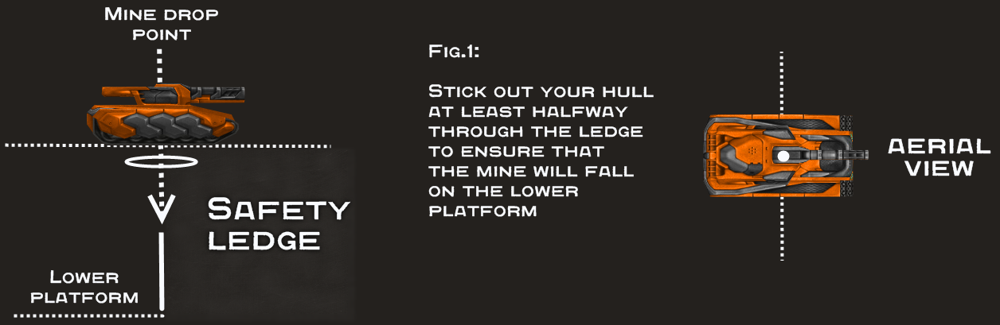
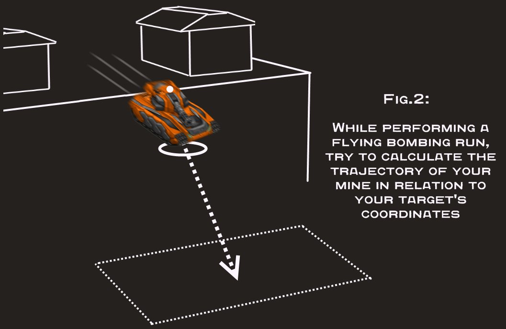
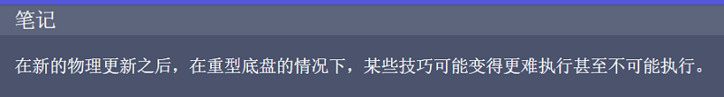

地雷是非常小但具有威胁性的物体，可造成 1500 伤害，有 5% 的几率造成 3999 暴击伤害。
它们在被种植 0.05 秒后激活，并且无法被 15 米以外的敌人看到（10米处完全可见）。
当一个人想要快速超越对手时，地雷可以极大地帮助一个人的防守努力和棘手的情况。
价格
50
自从在游戏发布后的第一个补丁中实施地雷以来，人们一直在利用地雷在简单的基地防御和战术进步中发挥自己的优势。然而，有些人，在过去的某个时候，决定将布设地雷的艺术提升到一个新的水平。开发了一种新的地雷用途——主动地雷布置。
从来没有人认为防御用的设备可以在一个人的突击演习中替代高伤害的主炮。很快，一些人开发了必要的策略和技能来利用地雷的这种潜力，战术布雷成为一件事。正如我们所知，现在的布雷远远不仅仅是制造巨大的雷区和等待“猎物”。
技巧：您可以使用游戏的地雷放置算法直接射击您下方的敌人，而不是使用您的地雷作为您的基地/安全巢穴的爆炸性路障，例如，从悬崖上飞下。
提示
任何尝试在边缘附近放置地雷的人都必须注意到，只要大部分底盘都在地面上，地雷是如何降落在坦克停放的平台上的。如果你驾驶你的坦克，使超过一半的底盘从边缘伸出，从你的坦克掉落的地雷将落在坦克中心下方最近的表面上。如果没有这样的表面，地雷就会掉进深渊而消失。为什么，你问，坦克的中心？处理地雷放置的游戏引擎以这样一种方式工作，即要求底盘中心（除少数例外）位于水平面上，以便投下地雷。通过将底盘驱动到平台边缘倾翻的边缘，然后触发地雷的放置，可以轻松绕过该算法。建议使用高后坐力武器以避免从山上滑落。使用这种技术，你可以造成严重的伤害，甚至摧毁任何停留在你有利位置以下的坦克。

学习这个机制对于您将执行的几乎所有其他地雷放置技巧都非常有益。顶峰技巧非常有效，但还有其他更先进、风险更大的方法可以对敌人造成巨大伤害。
“超越边缘”的技巧
让我们以蓝队在寂静的基地的壁架为例，这是一个典型的例子。也有多种方法可以在这里应用顶峰技巧，但许多人更愿意尝试更激烈、更激进的方法。山上是进行速度跳跃的理想场所，因此千万不要错过这个机会。假设你使用的是一艘轻型或中型底盘，冲向敌方基地返回一个帽子。封盖机由您没有时间处理的护送人员保护。最重要的是，如果您使用的是短程炮塔，例如磁力炮、冰风暴或火焰炮。这是一个很好的机会来尝试使用地雷的伤害来清除阻挡你通往目标的道路的敌人的第二大机动。您可以将您的坦克从山上跳下，在封盖机的护送下丢下地雷，然后安全地继续追逐。该策略使用与更简单的顶峰策略相同的技术，但不同之处在于您必须计算坦克到地面的位置，并在您认为自己超出预测位置时准确按“5”键你的目标。这种机动几乎在任何高平台上都很有效，从寂静和大桥3C到海滨中心和黑色城堡-1。

结果
学会了如何使用地雷放置机制后，您可以将 Tanki Online 地雷的受控爆炸用作向下射击的炮塔，完美替代配备短程武器的坦克的即时伤害（如激光炮和镭射炮）。此外，如果您使用任何其他具有实际后坐力的炮塔（火龙珠、轰天炮、雷暴炮、激光炮、镭射炮），您最终可以通过同时使用两种武器来让敌人大吃一惊，其中一种武器的伤害和重载与镭射炮差不多安装在坦克下方，另一个安装在传统炮塔中。这适用于几乎所有底盘，但不包括像猛犸象和泰坦这样的重型底盘，它们需要一个亚硝酸包才能有机会在不失去空中稳定性的情况下进行特技表演。
